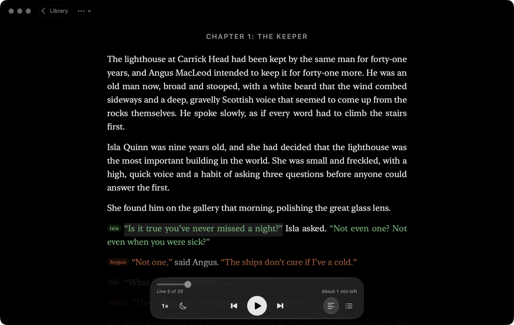
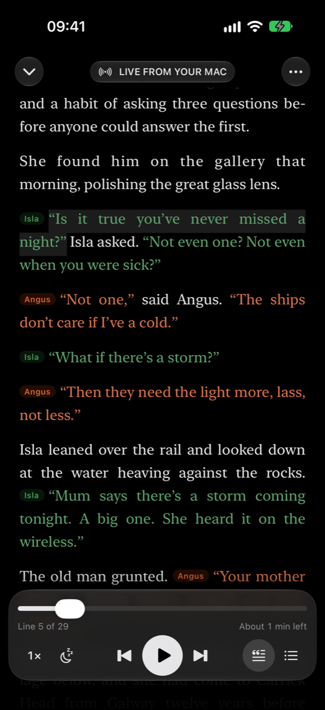
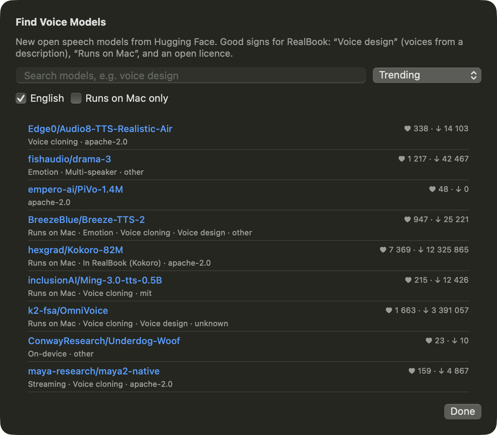

RealBook gives every character in a book their own voice, fitted to how the book describes them: the old Scottish lighthouse keeper sounds old and Scottish, the nine-year-old sounds nine. Free, and it runs entirely on your computer.
Open source (GPL-3.0). No account, no subscription. Works with DRM-free EPUB and text files.

When you add a book, RealBook finds who is speaking each line of dialogue and what the book says about them, then casts a voice for each of them.
With designed voices (Qwen3-TTS), each character's voice is made from a written description: “An old man in his seventies with a deep, low voice and a Scottish accent.” Rewrite any description and hear the change.
Kokoro's natural-sounding voices run on your own computer, about four times faster than real time. Nothing is uploaded.
A built-in analyzer attributes dialogue to characters for free. Optionally, Claude can read the book for even more accurate casting.
A native Mac app with themes, fonts and sizes like Apple Books, a table of contents that follows the book's own, and each speaker's lines in their colour.

The RealBook iPhone app pairs with your Mac: open Listen on iPhone and scan the code. It reads like the Mac, keeps your place in step with it, and the voices are made on your Mac, so even the large models work.
Going out? Whenever it can reach your Mac, your iPhone saves the next 4 hours of the book you're listening to. Or keep a whole book on it as an offline copy, or export an .m4b audiobook for any audiobook app.
The iPhone app isn't on the App Store yet: you can install it from the source with Xcode and a free Apple ID (how). Android phones, tablets and other computers listen in their browser: scan the same code with the camera. On Windows and Linux, turn on Listen on Other Devices in Settings.

Open speech models improve every month. Find Voice Models lists what's trending on Hugging Face and highlights what matters: voice design, whether it runs on a Mac, and its licence.
| Computer | What you get | First launch |
|---|---|---|
| Mac with Apple silicon, macOS 14+ | Mac voices, Kokoro, the iPhone app and audiobook export. Designed voices (Qwen3-TTS) need macOS 26 or later. | Open RealBook.dmg and drag RealBook to Applications. The app isn't notarized yet: the first time, macOS will refuse to open it; go to System Settings → Privacy & Security and click Open Anyway. |
| Windows 10 or 11 | Windows voices, Kokoro, listening in your phone's browser. Designed voices and audiobook export are Mac-only for now. | Unzip RealBook-windows.zip and run RealBook.exe. SmartScreen may warn about an unknown publisher: click More info → Run anyway. |
| Linux, 64-bit (Ubuntu 22.04, Debian 12, Fedora 36 or newer) | Kokoro, and espeak-ng voices if it's installed; listening in your phone's browser. Designed voices and audiobook export are Mac-only for now. | Unpack RealBook-linux.tar.gz and run RealBook/RealBook. Download the Kokoro voices when it offers them: that's what reads your books. |
Voice models are downloaded from inside the app the first time you choose them: Kokoro is 354 MB, designed voices 6.3 GB.